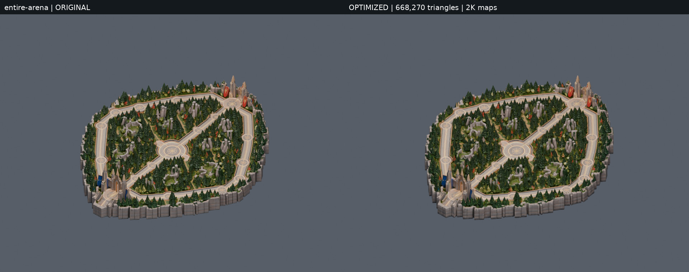
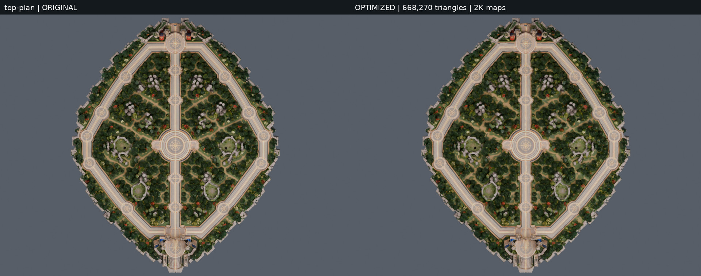
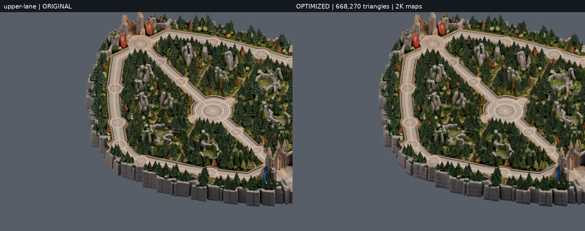
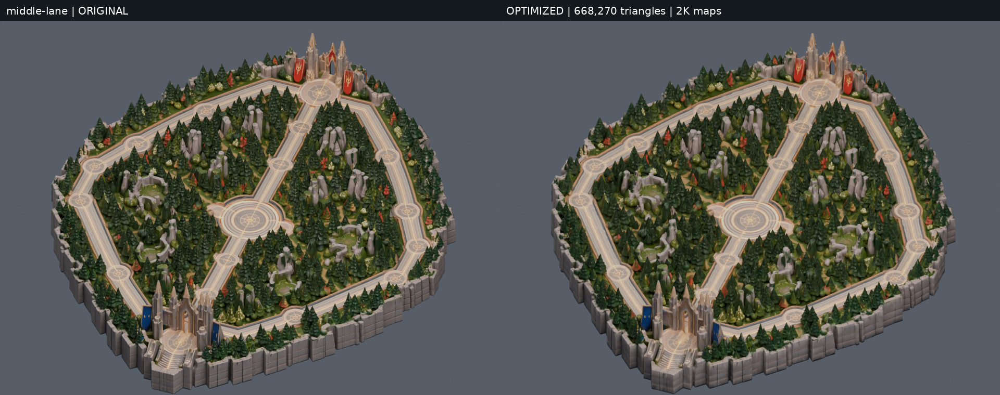
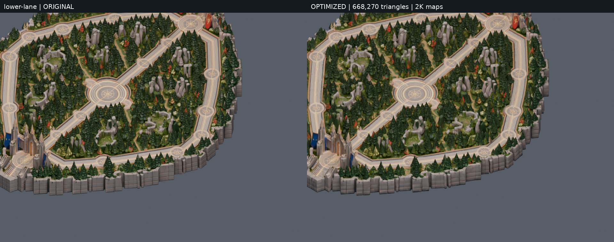
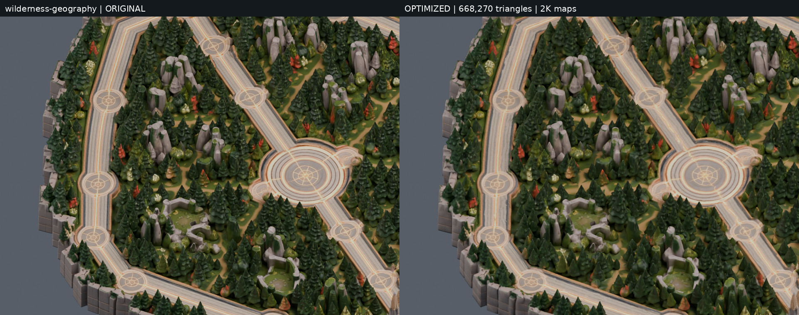
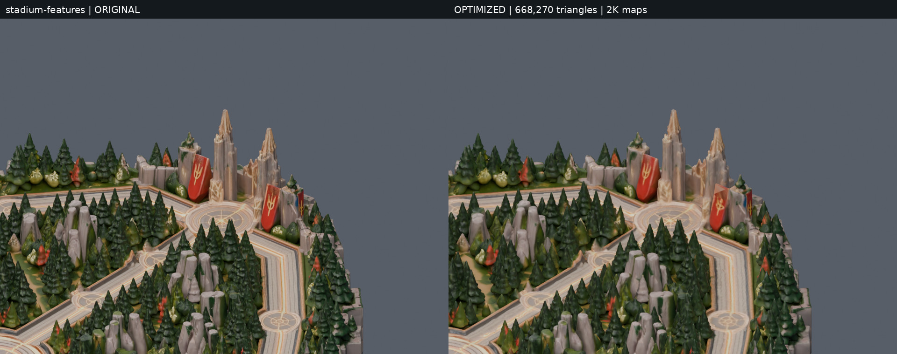
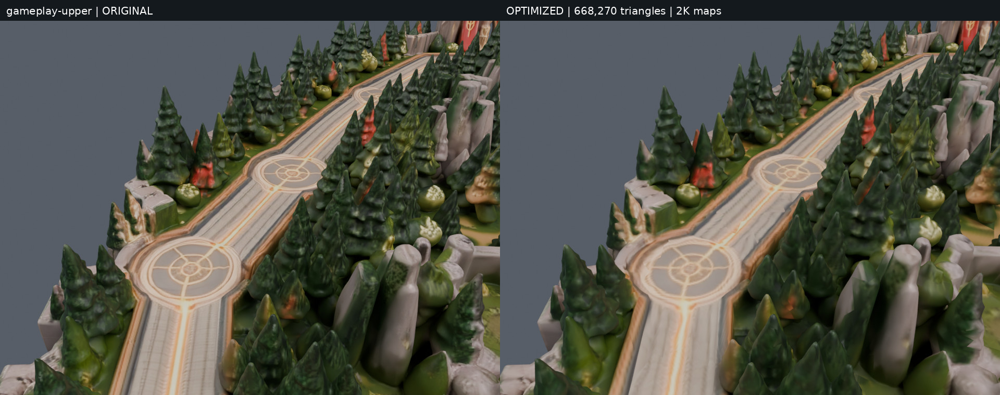
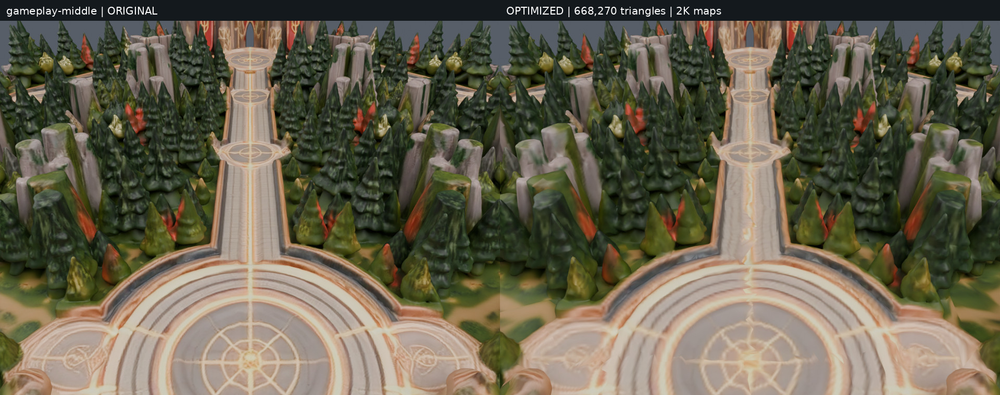
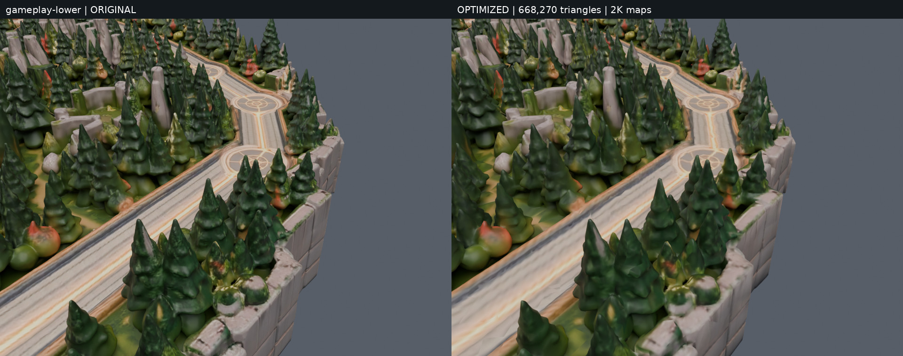

Founder’s verified three-lane source, unchanged coordinates. Left: original 5,568,924 triangles with 4K/2K/4K maps. Right: weighted reduction to 668,270 triangles with 2K maps. Matched Cycles CPU renders, 16 samples and denoising.
Upper/lower names provisionally identify negative/positive Blender X flanks. Gameplay views use the existing competitive camera’s 48° vertical FOV and 15.5:22 elevation/look direction, with distance scaled for this normalized source. These are asset-review views, not integration screenshots.










Collision strips are partial, open and fragmented; no gameplay validation. Reimport overview verifies material/geometry conversion separately. See reports/GOAL_013_REPORT.md for scope and limitations.